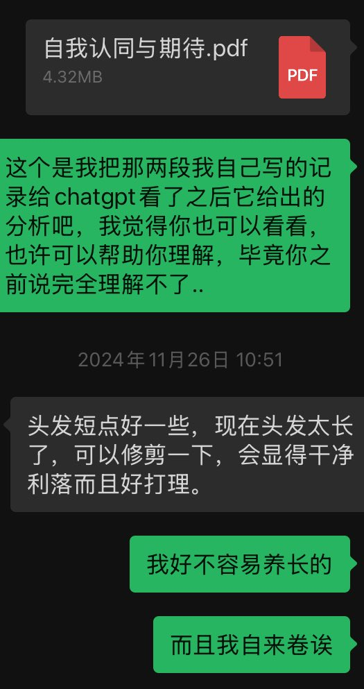
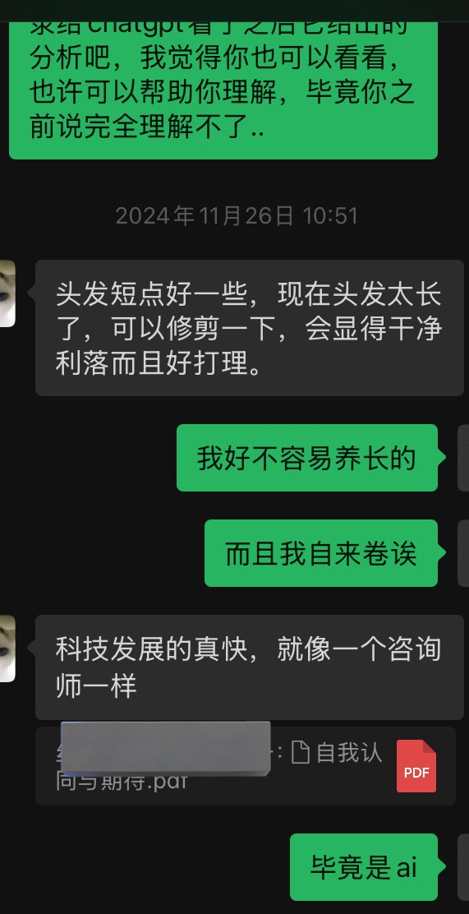
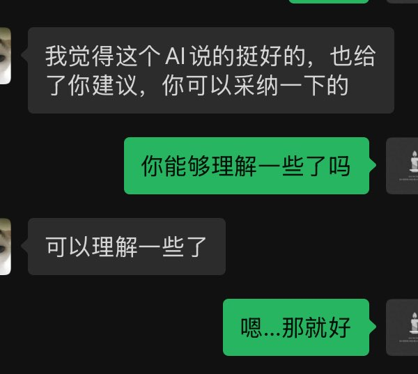

北雁冬翼（simone luxem）🏳️⚧️🏳️🌈🔬
@Simone_Luxem
@wyao9533 @maomaoju12 不，ai可以解决实际问题，比如就可以解决父母理解不了自己的问题，在一定程度上



Freya Yao🍥
@wyao9533
@maomaoju12 之前看到有一篇调查问卷评选ai最有用的10个用法。其中排名第一的是情感倾述。具体链接找不到了。用过就知道了，这方面ai是无敌的。每个人都有情感需求，ai能提供这种情感需求，而且就像刷短视频一样，这是会上瘾的。但是ai无法解决实际问题，而我们能。这也是ai做不到的事情。很多人意识不到这一点。